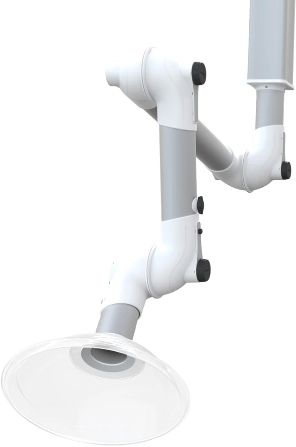

Fumex ME
The Fumex ME extraction arm combines maximum flexibility with minimal pressure drop. This makes it the optimal type of extraction arm for all general laboratories and light industry.
Patented friction design: the ME extraction arm features a patented friction design that provides exceptional positioning stability, despite the light and highly flexible movement of the arm within its working radius. When not in use, the arm can be moved completely out of the working zone so that work is not obstructed, while the joint system and positioning still leave enough room to access the laboratory equipment that requires extraction.
ME models are available with a wide range of hoods and mounting brackets, so they can be installed in a variety of laboratory settings and serve a large number of instruments, depending on the required airflow and the type of substance being extracted, regardless of the conditions of the space and the nature of the work. Available materials: aluminium, polypropylene and stainless steel.